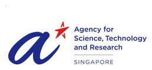

I turn physiological signals into intelligent medical technology.
I’m Preeti Ramesh. I study electrical and computer engineering at USC with a focus on machine learning. I take messy physiological and clinical data and learn the problem behind it. Then I turn it into something people can use.
How my work flows
- Physiological signalsWhat the body gives off
- Signal processingCleaning out the noise
- Machine learningFinding patterns that hold up on new people
- Clinically meaningful toolsSomething clinicians and researchers can use
Each bright point is a project. Hover or tap the body or the timeline; they light up together.
Where I’ve learned and built
About
I show up for the work even when I don’t know the script yet. I learn the problem. I look for a way forward. And I keep moving.
My path started with electronics at NIT Tiruchirappalli. Research then took me across India, Singapore and the United States. Now I study machine learning at USC. Most stops added a new part of the body and a new kind of data.
I have learned that the hardest part is rarely the model. It is understanding what people need. Some build sensors. Some read EEG all day. Some lead clinical studies.
Impact keeps me here. I want healthcare technology to be more useful and more reliable. I also want it within reach of more people.
- University of Southern California
- M.S. Electrical and Computer Engineering, Machine Learning and Data Science. 2025–2027. GPA 3.92

Honours- Singapore International Pre-Graduate Award (SIPGA), A*STAR, 2024. The award that brought me to Singapore.
- National Institute of Technology, Tiruchirappalli
- B.Tech. Electronics and Communication Engineering. 2021–2025. CGPA 3.51
Experience
Research and projects
Publication
Advancing Emotion Detection through Dual-Channel EEG and Peripheral Physiological Signal Integration
Sharan Roy, Shreya Manish Band, Preeti Ramesh, Punitkumar Bhavsar, Ar Jac Fredo, Deepesh Kumar. pp. 105–109, Dubai. 2024 International Conference on Modeling, Simulation and Intelligent Computing (MoSICom), IEEE.
Read on IEEE Xplore DOI 10.1109/MoSICom63082.2024.10881605Forthcoming
- Wearable stress detection (Khan Lab). Conference paper in preparation.
- Early-life adversity (CHLA Levitt Lab). Manuscripts in preparation.
Skills
How I work
Technical toolkit
Signals
- EEG
- sEEG
- MEG
- EMG
- ECG
- PPG
- HRV
- EDA
- RSA
- Respiratory audio
Signal processing
- MNE-Python
- Brainstorm
- NeuroKit2
- SciPy
- HeartPy
- Filtering
- Wavelets
Machine learning
- PyTorch
- TensorFlow/Keras
- scikit-learn
- Feature selection
- Transformers
- LOSO and nested CV
- Multimodal models
Data
- Python
- MATLAB
- NumPy
- Pandas
- Matplotlib
- statsmodels
- FDR control
- Bootstrap and permutation tests
- Mixed-effects models
- REDCap
Embedded
- ESP32
- CAN bus
- Virtual ECU
- Data acquisition
- Protocol testing
Tools
- Git
- VS Code
- Firebase
- Jupyter
- ipywidgets
- Plotly
- pytest
- SLURM / HPC
Résumé
A one-page PDF with the same information, for applicant systems.
Download résumé (PDF)Contact
What I’m looking for: roles in machine learning for biomedical and clinical data where careful validation matters. I graduate in May 2027.
- preetiatoz@gmail.com
- linkedin.com/in/preeti-ramesh
- GitHub
- github.com/preeti-ramesh
- Based in
- Los Angeles, California